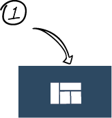
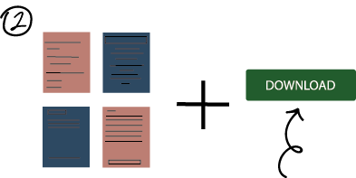

SOW templates is an online library with a whole host of FREE beautiful templates waiting to be used. We offer both downloadable and printable templates, depending on your preferences.
 Simply click the template icon to open our selection of downloadable templates
 Broswe through our wide range of templates & choosen the one you like. Once you find the perfect one, click 'download'.
Once the template is downloaded, our templates can be opened in word, preview, adobe acrobat or edited in the broswer.